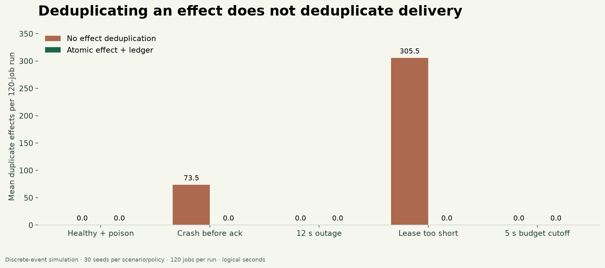
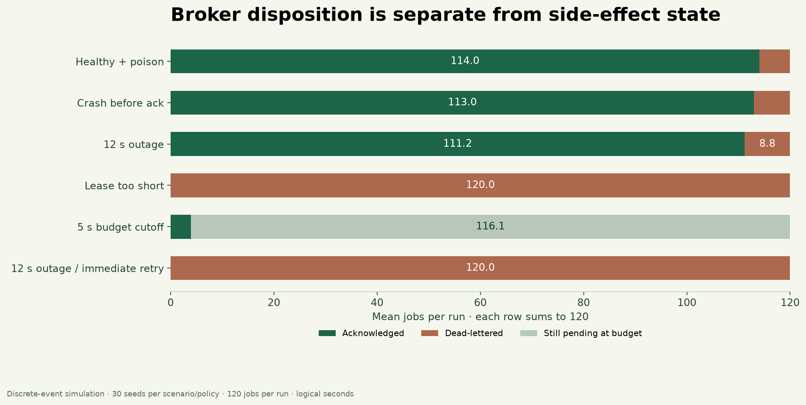
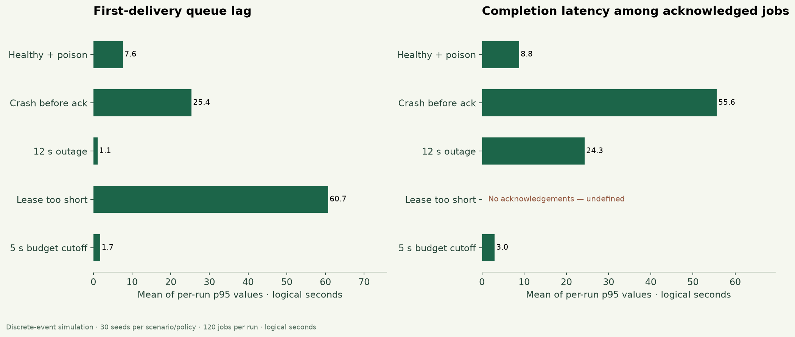
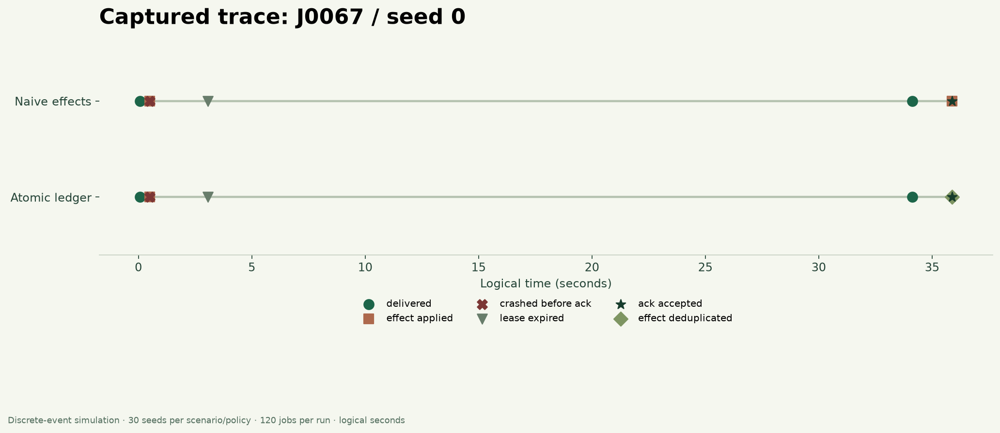

The job ran.
The acknowledgement
never arrived.
A discrete-event model of at-least-once job delivery: crash windows, expiring leases, bounded retries and atomic effect deduplication.
All times and failures are simulated. No live broker, cloud deployment or production throughput is claimed. Atomic deduplication assumes the effect and ledger entry share one transaction boundary.

An acknowledgement is a broker state.
An effect is application state.
- Worker receives a job with a new receipt token.
- The application applies the effect.
- A crash can occur before acknowledgement.
- The lease expires; the broker retries the job.
- An atomic ledger suppresses a repeated effect.
transaction:
if key exists:
reject mismatched payload
skip repeated effect
apply modeled side effect
store key + payload
commit
ack(current_receipt)This transaction boundary is a deliberate model assumption. A separate database insert followed by an external HTTP request does not satisfy it.

| Atomic / backoff scenario | Acked | DLQ | Pending | DLQ with effect | Drained runs |
|---|---|---|---|---|---|
| Healthy + poison | 114.0 | 6.0 | 0.0 | 0.0 | 30/30 |
| Crash before ack | 113.0 | 7.0 | 0.0 | 1.0 | 30/30 |
| 12 s outage | 111.2 | 8.8 | 0.0 | 0.0 | 30/30 |
| Lease too short | 0.0 | 120.0 | 0.0 | 114.0 | 30/30 |
| 5 s budget cutoff | 3.9 | 0.0 | 116.1 | 0.0 | 0/30 |
Immediate retries can exhaust attempts before recovery.
In the configured 12-second downstream outage, atomic workers with immediate retry acknowledge zero jobs: all 120 exhaust six attempts. Exponential backoff with full jitter acknowledges a mean 111.2 of 120. The remaining mean 8.8 jobs reach the DLQ without an effect.
delay = uniform(0, min(cap, base × 2^(attempt − 1))) base = 1 logical second cap = 16 logical seconds maximum attempts = 6
Backoff also increases completion time. It does not make poison work succeed or guarantee recovery before the attempt budget runs out.
Random draws are indexed by seed, job, attempt and purpose. Changing scheduling does not shift another job's failure draw. Outage failures intentionally depend on logical completion time.

Completion latency excludes jobs without an acknowledgement. An undefined p95 is shown explicitly. The budget-cutoff mean uses 29 nonempty runs; the full CSV records the denominator.
A stale worker may finish after the broker has given up.
The short-lease scenario sets visibility to 0.6 seconds while processing takes 2–4 seconds. No receipt survives until completion. Every job reaches the DLQ after four deliveries; a mean 114.0 jobs per run already have an effect.
Lease expiry
- Invalidates only the matching receipt.
- Makes the job eligible for retry.
- Does not free or cancel the busy worker.
- Late acknowledgements are rejected.
Drain accounting
- A broker-terminal job can still have a running worker.
- Effects after a DLQ transition remain visible in the trace.
- Budget-pending jobs are not classified as lost or failed.
- Drain requires zero pending jobs and zero executing tasks.
Idempotency prevents repeated modeled effects; it does not repair a lease that always expires too early. Fit visibility to processing duration or implement lease renewal in a real worker design.
Same-time ordering is explicit: expiry precedes completion, then retry/arrival readiness, then worker restart. A completion exactly at lease expiry has a stale receipt in this model.
Follow one crash through both policies.

| Logical s | Naive event | Attempt | Effect count |
|---|---|---|---|
| 0.063 | delivered | 1 | — |
| 0.501 | effect_applied | 1 | 1 |
| 0.501 | crashed_before_ack | 1 | — |
| 3.063 | lease_expired | 1 | — |
| 34.123 | delivered | 2 | — |
| 35.880 | effect_applied | 2 | 2 |
| 35.880 | ack_accepted | 2 | — |
python scripts/replay_trace.py \ results/traces/crash_window--naive_backoff--seed0.jsonl
The replay auditor reads event records and recomputes acknowledgements, DLQ transitions and effect counts without running the scheduler. It rejects inconsistent terminal events and altered summaries.
Seven JSONL traces · All 450 run outcomes · Configurations and seeds
Inspect the failure before replaying the queue.
- Check pending, executing, acknowledged and DLQ counts separately.
- Compare lease duration with worker processing time.
- Inspect DLQ entries for an existing application effect.
- Check idempotency-key scope and payload mismatch policy.
- Bound retries and confirm downstream recovery before redrive.
python scripts/run_experiments.py python scripts/render_report.py python -m unittest discover -s tests -v
Detailed runbook · Architecture decision · Repository guide
AI-assisted engineering study. These are reproducible simulations, not an implementation of a production broker or proof of exactly-once delivery. The model omits partitions, persistent broker recovery, lease renewal and external side-effect transactions.